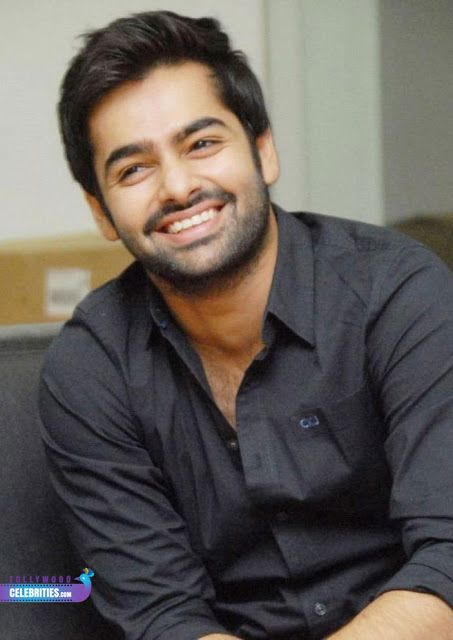

Bandhavya Bollina

Professional Summary
- Around 3 years of experience in analysis, design, development of web applications.
- Strong knowledge on using JavaScript, HTML5, and CSS to build all aspects of the user experience and user interface for client-facing landing pages.
- Excellent communication and organizational abilities with a resourceful approach in solving diverse problems.
- Worked effectively with cross-functional teams.
- Knowledge in working on Database related concepts.
- Well versed in AGILE methodologies.
- Responsibilities I take RootCauseAnalysis, Development.
- Collaborative and hardworking team player with critical thinking skills and Systematic approach.
- Ability to quickly understand the requirements & code as per the design.
- Adaptive to new applications and technologies.
- Ability to work efficiently in a high-pressure, fast-paced, deadline driven environment.
Education
- Bachelor of Computer Applications(Cloud Computing), 2015-2018.
Work Experience
- Infosys Ltd - Web Developer(2019-2021)
Project 1
Easy Fill Pharmacy Retail Network - Kroger
EPRN is a pharmacy solution. It comes with modules which help in the prescription filling, patient accounts, workflow management, DUR, compounding and all other activities that are required to run your pharmacy in the best possible way.we developed the code based on the business requirements by using below tools.
javascript+CSS+HTML+WebSphere+Oracle+jira+Git+Visual Studio Code.
Roles and Responsibilities
- Developed user interfaces with modern JavaScript frameworks, HTML5 and CSS3.
- Conducted testing and review of website design for responsiveness, clarity and effectiveness.
- Developed page layouts and navigation tools that met or exceeded user expectations.
- Contributed ideas and suggestions in team meetings and delivered updates on deadlines, designs and enhancements.
- Worked in Agile software development environment which involves two weeks’ sprints, day to day standup, backlog grooming, sprint planning and retrospective meetings.
Technical Skills
- Operating System : Linux, Windows, OS X.
- Programming Languages : C, Java, C#, HTML, CSS, JavaScript, Python Databases : MySQL, MongoDB.
- SCM : GIT.
- Web Technologies : HTML, CSS,javascript.
- Frameworks : NodeJS, ReactJS.
- IDE : Netbeans,Eclipse,Visual Studio Code.
- Build Tools : Jira,Jenkins.
Achievements
- Achieved Rising star Award for the excellence shown at work in Infosys.
- Awarded twice as “Most Valuable Player “ as part of CROWN awards for contribution in FY20 and FY21.
Other